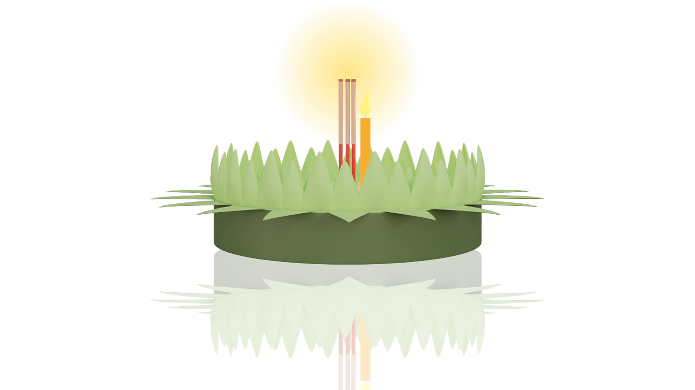

ลอยกระทงออนไลน์
องค์การบริหารส่วนตำบลบางรักน้อย
หน้าหลัก
เกี่ยวกับงานประเพณี
กระทงรวมใจ
สถิติ
ปล่อยคำอธิษฐานของคุณไปกับสายน้ำ 🌕
ลอยเลย!
🔈 เสียง

*คำอธิษฐานที่กด “ลอยเลย!” จะถูกเก็บไว้ใน “กระทงรวมใจ” (ภายในอุปกรณ์ของคุณ)
📸 บันทึกรูปฉาก
— จะบันทึกเฉพาะกรอบแม่น้ำ